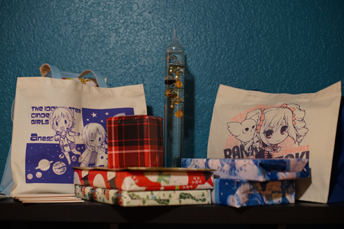
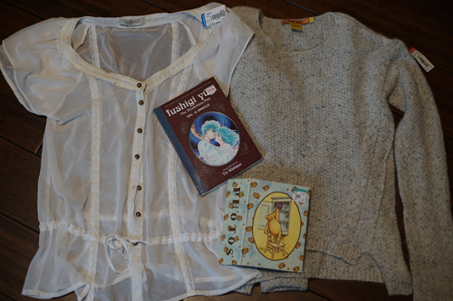
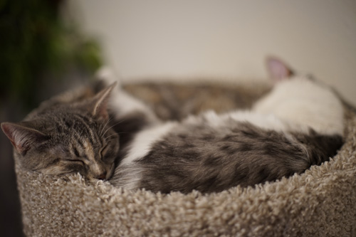

I have a big new years resolution this year! I've decided I'm going to do my best again to remember Makoto's birthday! Last year I was finally able to remember after writing it huge on my calendar. I've already done that and I'm writing it everywhere I can think. I'm not going to fail this year!
Last year I found out about 2nd Christmas from saint-images! It's January 7th so I hope you're all ready to give Christmas a second go because I am! I gotta prepare more presents and leave my tree up until then!
We got a little snowbound so we weren't able to hang out with people much. Luckily it got a little better by New Year's Eve. Finally, Ryan and I were able to distribute Peter's presents! Slippils doesn't have a tree out so we used the very festive christmas thermometer. I hope everyone liked their gifts even though I wasn't the one who picked out any of them ;_;
I made cards for everyone, but since Makoto couldn't make it, I won't post the drawings I did for them yet.
Kohi and I got to escape and visit a local goodwill! We found a few things each.
Very very sheer but also very cute! I'm not sure if ill wear it under or over something but I'll figure something out
unfortunately, the easiest way to get me to buy your clothes is telling me it's made of baby alpacas
I found fushigi yuugi on DVD a few months ago but it was also volume 2! These thrift stores must be in cahoots with each other
i own 3 empty photo albums now. its time to order some prints already!
I also fixed Kohi's blog!!! She had a really cute pixel art cursor with a 15px margin (for reasons unknown) that made clicking links just hell. 10 seconds after finding the file link in her code I was able to crop that bad boy down! We had a wonderful night of looking at jfashion magazines and mercari together. i found a fashon snap in a 2008 Kera of a lolita and ouji, but the ouji was carrying her doll! I want my 2022 to be inspired by this woman with her doll.
I made the mistake of venturing into English twitter again. I see my followers are continuing to drop, but I haven't had a net rise in followers since November 2016, so that isn't surprising. Twitter really changed for the worse that month. It was once "who can make the funniest tweet today" and turned into "who can be the most outraged today"
I ran across this tweet and it really gets the point across. "Why don't we just kill the people we don't like" seems to be the new cool and acceptable thing to say. 10 years ago, this wasn't acceptable to say anywhere outside of /b/. Twitter is only a detriment to everyone's mental health at this point.
I still look at it because I don't know how to find japanese doll photos any other way, but luckily I can't read any japanese to know if it's awful there or not. I wish they used different platforms or made websites but the online world won't make it out of social media. It's too convenient and addictive. Remember when it took effort to find somewhere to upload your image you wanted to share online? I do.